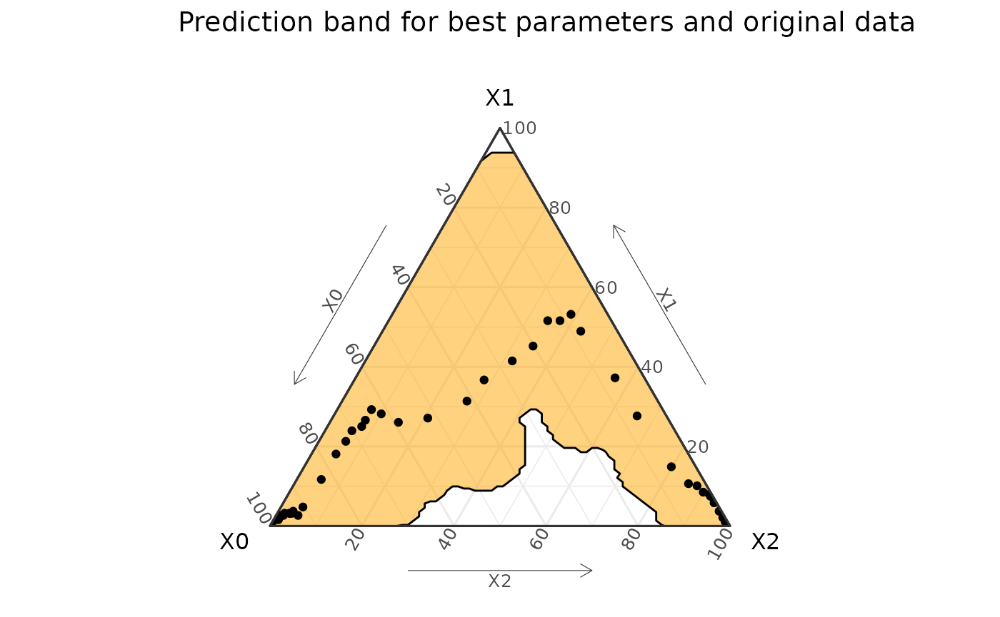
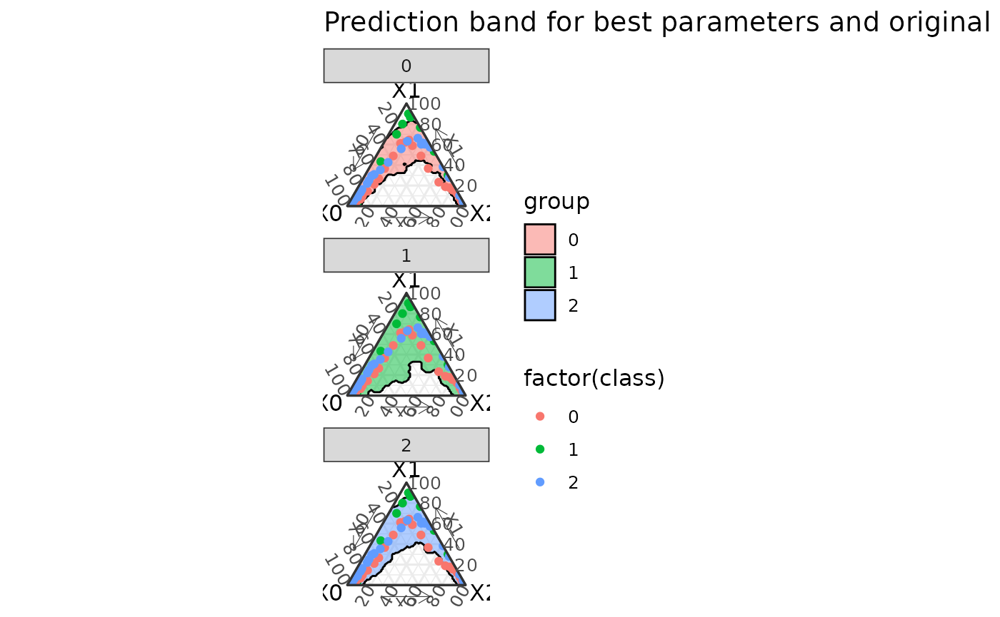

Hagelloch Measles – Fitting a Stochastic SIR Grouped (Full) Model
Source:vignettes/not-built-vignettes/hagelloch-sir-stochastic-three-groups-full-model.Rmd
hagelloch-sir-stochastic-three-groups-full-model.RmdOverview
In this series of vignettes, we will demonstrate epidemic analysis pipeline from EDA to dissemination using a case study of measles.

Hagelloch series vignettes
Hagelloch 1 Pre-processing and EDA
Hagelloch 2.1 Modeling and Simulation: the SIR model
Hagelloch 2.2 Modeling and Simulation: fitting a SIR model
Hagelloch 2.3.1 Modeling and Simulation: a stochastic SIR model
Hagelloch 2.3.2 Modeling and Simulation: a stochastic SIR model
Goals in this vignette
Look at a three-group model
Derive the likelihood
Find parameters that maximize the likelihood for the Hagelloch data.
Simulate SIR models from the best fit model
Previously we saw that the classes of children may have different SIR curves. We can model this in a number of ways: one being to partition the children into three separate groups of susceptibles. These susceptible children in classes Pre-K, first, and second class have rates \(\beta_0\), \(\beta_1\), and \(\beta_2\) rates of becoming infectious. The children still all share the same rate of recovery, \(\gamma\).
This model can be described with five states: \((X_0, X_1, X_2, X_3, X_4) = (S_0, S_1, S_2, I, R)\) and the following equations
After loading the libraries,
library(tidyverse)
library(EpiCompare)
library(knitr)
library(kableExtra)
library(RColorBrewer)
library(deSolve)we get the aggregate SIR data from hagelloch_raw and define our deterministic, continuous time SIR model.
data("hagelloch_raw")
hag_df <- hagelloch_raw %>%
select(PN, tI, tR, CL, IFTO)
hag_df$IFTO[is.na(hag_df$IFTO)] = 3 ## arbitrary assignment
hag_df <- hag_df %>% rename(infector_id = IFTO,
agent_id = PN,
group = CL) %>%
mutate(group = ifelse(group == "1st class",
1,
ifelse(group == "2nd class",
2, 0)))
## Getting aggregate data
aggregate_hag <- hag_df %>%
group_by(group) %>%
agents_to_aggregate(states = c(tI, tR),
min_max_time = c(0, 55)) %>%
select(t, group, X0, X1, X2)
t0_df <- aggregate_hag %>% filter(t == 0)
expect_equal(sum(t0_df$X2), 0)
par <- c(.2,.1, .05,
.19, .09, .04,
.18, .08, .03,
.02)
names(par) <- c("beta11", "beta12", "beta13",
"beta21", "beta22", "beta23",
"beta31", "beta32", "beta33",
"gamma")
out <- EpiCompare:::loglike_3_groups_internal(par,
agents_df = hag_df,
agg_df = aggregate_hag)
expect_true(out > 0)
best_params <- optim(par = par,
loglike_3_groups_internal,
agents_df = hag_df,
agg_df = aggregate_hag,
method = "L-BFGS-B",
lower = .01, upper = .999)
betas <- matrix(best_params$par[-10], nrow =3, byrow = TRUE)
gamma <- best_params$par[10]
print(best_params$par, digits = 2)## beta11 beta12 beta13 beta21 beta22 beta23 beta31 beta32 beta33 gamma
## 1.00 0.49 1.00 1.00 0.54 1.00 1.00 0.81 0.70 0.13Simulating new outbreaks
Now that we have the best (point) estimate for \(\beta\) and \(\gamma\), we can simulate new data.
# par1
## This is the SIR representation
trans_mat <- matrix("0", byrow = TRUE, nrow = 9, ncol = 9)
trans_mat[1, 1] <- "X0 * (1 - (par1 * X3 + par2 * X4 + par3 * X5) / N)" ## S0 -> S0
trans_mat[1, 4] <- "X0 / N * (par1 * X3 + par2 * X4 + par3 * X5)" ## S0 -> I0
trans_mat[2, 2] <- "X1 * (1 - (par4 * X3 + par5 * X4 + par6 * X5) / N)" ## S1 -> S1
trans_mat[2, 5] <- "X1 / N * (par4 * X3 + par5 * X4 + par6 * X5)" ## S1 -> I1
trans_mat[3, 3] <- "X2 * (1 - (par7 * X3 + par8 * X4 + par9 * X5) / N)" ## S2 -> S2
trans_mat[3, 6] <- "X2 / N * (par7 * X3 + par8 * X4 + par9 * X5)" ## S2 -> I2
trans_mat[4, 4] <- "X3 * (1 - par10)" ## I0 -> I0
trans_mat[4, 7] <- "X3 * (par10)" ## I0 -> R0
trans_mat[5, 5] <- "X4 * (1 - par10)" ## I1 -> I1
trans_mat[5, 8] <- "X4 * (par10)" ## I1 -> R1
trans_mat[6, 6] <- "X5 * (1 - par10)" ## I2 -> I2
trans_mat[6, 9] <- "X5 * (par10)" ## I2 -> R2
trans_mat[7, 7] <- "X6" ## R0 -> R0
trans_mat[8, 8] <- "X7" ## R1 -> R1
trans_mat[9, 9] <- "X8" ## R2 -> R2
rownames(trans_mat) <- c("S_0", "S_1", "S_2",
"I_0", "I_1", "I_2",
"R_0", "R_1", "R_2")
init_vals <- c(90, 30, 67,
0, 0, 1,
0, 0, 0)
par_vals <- best_params$par
max_T <- 55
n_sims <- 500
kable(trans_mat, format = "html") %>%
kable_styling(bootstrap_options = "striped")| S_0 | X0 * (1 - (par1 * X3 + par2 * X4 + par3 * X5) / N) | 0 | 0 | X0 / N * (par1 * X3 + par2 * X4 + par3 * X5) | 0 | 0 | 0 | 0 | 0 |
| S_1 | 0 | X1 * (1 - (par4 * X3 + par5 * X4 + par6 * X5) / N) | 0 | 0 | X1 / N * (par4 * X3 + par5 * X4 + par6 * X5) | 0 | 0 | 0 | 0 |
| S_2 | 0 | 0 | X2 * (1 - (par7 * X3 + par8 * X4 + par9 * X5) / N) | 0 | 0 | X2 / N * (par7 * X3 + par8 * X4 + par9 * X5) | 0 | 0 | 0 |
| I_0 | 0 | 0 | 0 | X3 * (1 - par10) | 0 | 0 | X3 * (par10) | 0 | 0 |
| I_1 | 0 | 0 | 0 | 0 | X4 * (1 - par10) | 0 | 0 | X4 * (par10) | 0 |
| I_2 | 0 | 0 | 0 | 0 | 0 | X5 * (1 - par10) | 0 | 0 | X5 * (par10) |
| R_0 | 0 | 0 | 0 | 0 | 0 | 0 | X6 | 0 | 0 |
| R_1 | 0 | 0 | 0 | 0 | 0 | 0 | 0 | X7 | 0 |
| R_2 | 0 | 0 | 0 | 0 | 0 | 0 | 0 | 0 | X8 |
set.seed(2021)
abm <- simulate_agents(trans_mat,
init_vals,
par_vals,
max_T,
n_sims,
verbose = FALSE)
grouped_agents <- abm %>%
tidyr::pivot_longer(cols = -c(sim, agent_id),
names_to = c(".value", "group"), names_sep = "_") %>%
filter(!(is.na(S) & is.na(I) & is.na(R)))
agg <- grouped_agents %>% group_by(sim, group) %>%
agents_to_aggregate(states = c(I, R))
## TODO
## geom_prediction_band problem??
obs_groups <- hagelloch_raw %>%
mutate(class = ifelse(CL == "1st class",
1,
ifelse(CL == "2nd class",
2, 0))) %>%
agents_to_aggregate(states = c(tI, tR),
min_max_time = c(0, 55)) %>%
rename(time = t, S = X0, I = X1, R = X2)
ggplot() +
geom_prediction_band(data = agg,
aes(x = X0, y = X1, z = X2,
sim_group = sim), alpha = .5,
conf_level = .8, fill = "orange") +
coord_tern() + theme_sir() +
geom_point(data = obs_groups,
aes(x = S, y = I, z = R)) +
labs(title = "Prediction band for best parameters and original data") 
ggplot() +
geom_path(data = agg,
aes(x = X0, y = X1, z = X2, group = sim),
alpha = .3, col = "gray40",
conf_level = .90) +
coord_tern() + theme_sir() + geom_point(data = obs_groups,
aes(x = S, y = I, z = R))
obs_groups <- hagelloch_raw %>%
mutate(class = ifelse(CL == "1st class",
1,
ifelse(CL == "2nd class",
2, 0))) %>%
group_by(class) %>%
agents_to_aggregate(states = c(tI, tR),
min_max_time = c(0, 55)) %>%
rename(time = t, S = X0, I = X1, R = X2)
grouped_agents <- abm %>%
tidyr::pivot_longer(cols = -c(sim, agent_id),
names_to = c(".value", "group"), names_sep = "_") %>%
filter(!(is.na(S) & is.na(I) & is.na(R)))
agg <- grouped_agents %>% group_by(sim, group) %>%
agents_to_aggregate(states = c(I, R))
ggplot() +
geom_prediction_band(data = agg,
aes(x = X0, y = X1, z = X2,
sim_group = sim,
fill = group),
alpha = .5,
conf_level = .95) +
coord_tern() + theme_sir() +
geom_point(data = obs_groups,
aes(x = S, y = I, z = R,
col = factor(class))) +
labs(title = "Prediction band for best parameters and original data") +
facet_wrap(~group, ncol = 1)